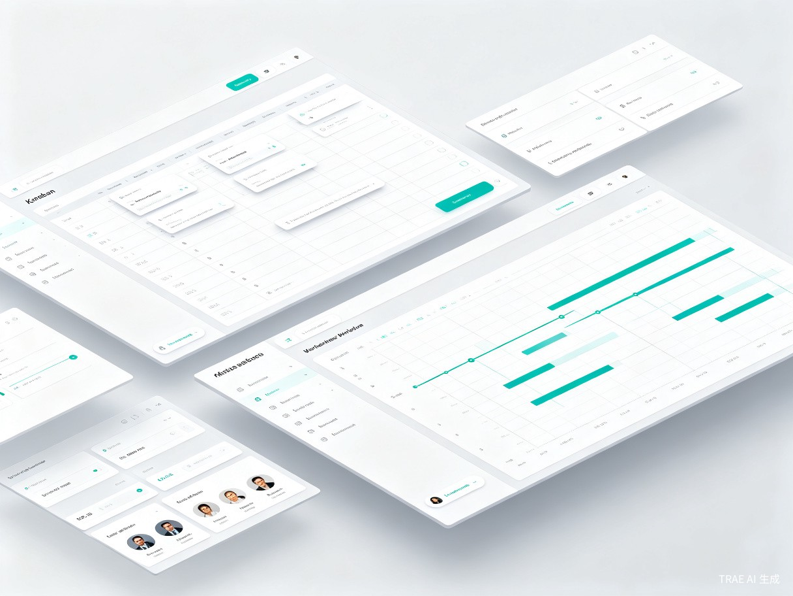

在企业实际工作中，需求、开发、测试、运维等阶段往往分散在不同工具中，信息孤岛严重，导致任务流转效率低、沟通成本高、进度难以把控。

流链将需求、开发、测试、运维整合在一个平台内，任务状态变更自动触发下游流程，让团队协作回归本质。
支持需求创建、评审、优先级排序、关联迭代，需求变更自动通知相关方
任务拆分、工时估算、代码仓库关联、Code Review 集成，开发进度一目了然
测试计划、用例管理、缺陷跟踪、自动化测试报告接入，质量保障有据可查
告警接入、故障工单、变更管理、SLA 统计，线上问题快速响应
多维度统计报表、团队效能分析、项目健康度评分，用数据驱动决策
需求智能分类、自动生成测试用例、异常根因分析、项目风险预警
覆盖研发全链路，每个环节紧密衔接，信息自动流转
产品经理创建需求，设定优先级，关联业务目标
任务自动分配，代码提交关联，进度实时同步
用例自动生成，缺陷一键提交，质量报告汇总
上线审批、监控告警、故障闭环，全链路可追溯
从效率提升与商业价值两个维度，为企业创造实实在在的价值
选用成熟稳定的技术组合，确保系统性能与开发效率
利用大模型 API 实现智能化功能，让系统不仅是工具，更是团队的智能助手
清晰的里程碑规划，确保项目稳步推进